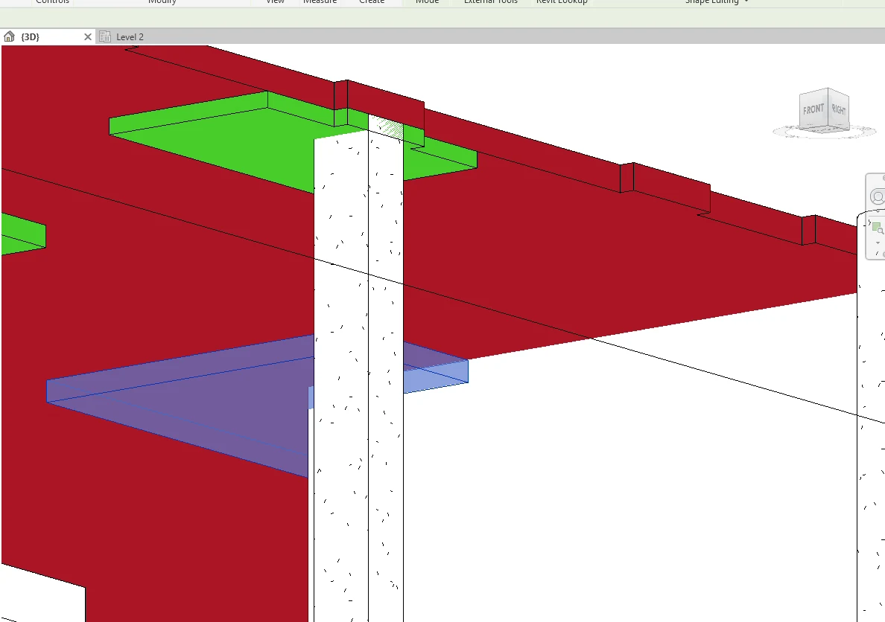

CAD-to-Revit Structural Modeling · Revit Add-in
Slabs & Drop Panels Modeling
Model slabs and drop panels from the same CAD plan.
Generate slab regions from CAD boundaries, apply thickness and level settings, and place drop panels under their corresponding slabs.
Spend the review on edges, thickness, and levels
Slab modeling combines boundary tracing with repeated type and elevation edits. Start from the drawing geometry, then review the generated edges and drops against the structural plan.
Automatically detects slab boundary geometry from the selected CAD layer
Slab thickness embedded in the CAD layer name
read and applied automatically
Auto-naming with user-defined prefix (e.g. S1, S2… or Slab 1, Slab 2…)
Drop Panels
recognizes existing slab geometry and places Drop Panels beneath correct slabs automatically
Level control
raise or lower any slab elevation directly from the tool interface
Supports any Drop Panel shape
rectangular, L-shaped, T-shaped, or irregular
See Slabs & Drop Panels Modeling in Revit
Follow the on-screen steps from setup to the modeled result.
Manual Revit vs. Slabs & Drop Panels Modeling
| Task | Manual Revit workflow | With Slabs & Drop Panels Modeling |
|---|---|---|
| Create slab boundaries | Trace each region and correct its sketch in Revit. | Read boundaries from the selected CAD layer. |
| Set thickness and elevation | Assign types and set offsets on the individual slabs. | Read thickness from the layer name and adjust levels in the tool. |
| Place drop panels | Sketch the panels and locate them under the corresponding slabs. | Generate panels for the existing slab geometry, including irregular outlines. |
Modeling slabs and drop panels for a concrete floor
CAD boundaries and thickness layers are prepared. Both workflows include checking outlines, slab elevations, and panel placement. These are planning estimates. Actual times depend on the model and setup.

One area · 5 slab regions and 5 drops
Manual in Revit
30–55 min
Trace the regions and drops, assign thickness, and check elevations.
Slabs & Drop Panels Modeling
1–2 min
Generate slabs and drops, then check outlines, thickness, and elevations.
28–54 min estimated savings
One floor · 30 slab regions and 20 drops
Manual in Revit
120–210 min
Create the slab and panel sketches and review the placement by zone.
Slabs & Drop Panels Modeling
3–6 min
Generate from the CAD layers, make level adjustments, and review representative zones.
114–207 min estimated savings
See how Slabs & Drop Panels Modeling fits your workflow
Tell us what you’re modeling or reviewing in Revit. We can walk through the workflow and discuss compatibility, licensing, and support. Use Request Package to add the package to your request list.